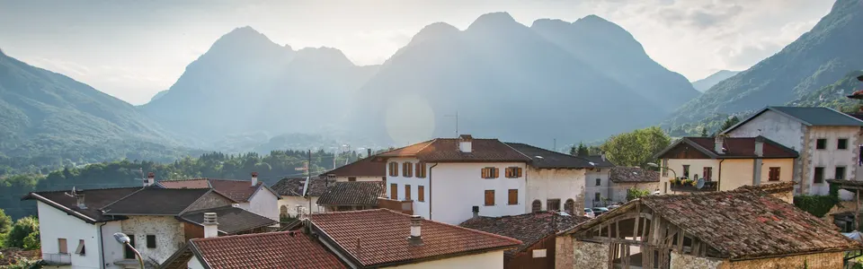

Lungis
Frazione di Socchieve, in Carnia
Il borgo
Cosa vedere e cosa fare a Lungis
Come la vicina Feltrone, Lungis è attraversata da numerosi sentieri, tra cui il percorso di mountain bike che congiunge tutte le frazioni del comune. In paese ci sono l'agriturismo In Già e il bar alimentari Al Cervo, e da qui parte l'Anello delle Frazioni.
130Abitanti
554m s.l.m.
2Sentieri
2Locali
Panorami
Lungis in foto
Sentieri dal paese
Dove mangiare e bere
- Agriturismo In Già
- Bar alimentari e tabacchi Al Cervo · tel. 0433 80007
Dove dormire a Lungis
Le case dell'albergo diffuso
Socchieve e i suoi paesi